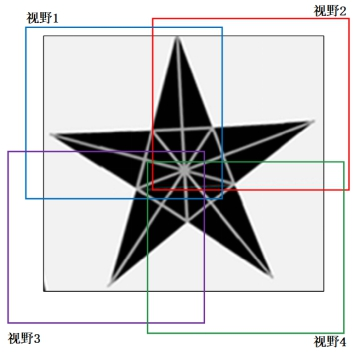
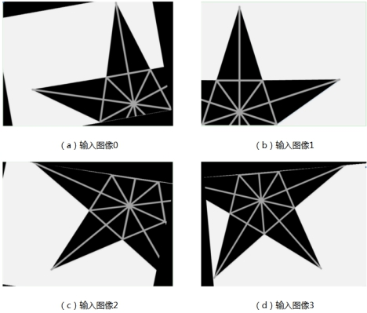
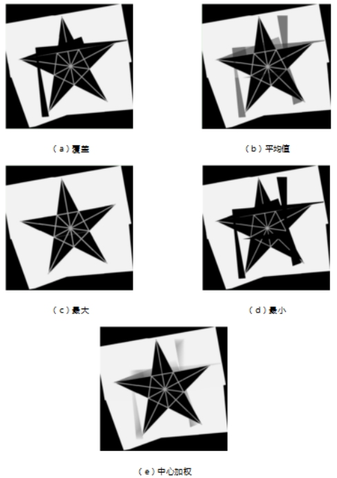
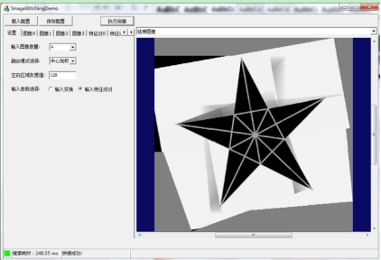
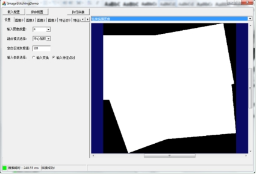

图像拼接是指将多幅来自同一场景的具有一定重叠区域的小尺寸图像合成为一幅大型的无缝高分辨率图像的技术（这些图像可以是不同时间、不同视角或者不同传感器获得的），图1给出了一个简单示意图。在工业视觉领域，图像拼接技术可以应用在单个相机无法满足的大视野、大幅面等场景，部分克服面阵相机的视野限制和分辨率限制。

| 分类 | 参数名称 | 参数描述 |
|---|---|---|
| 属性窗口 | 融合模式 | 图像拼接的模式，主要有：覆盖、最大值、最小值、平均值和中心加权等模式。 |
| 空白区域灰度值 | 拼接结果图像中非输入图像计算处的像素值。 | |
| 开启并行运算 | 是否开启并行运算，选择是时，算法将开启OpenMp并行计算方式，可以提升计算速度，但可能出现耗时不稳定的情况，选择否时，算法将关闭OpenMp并行计算。 | |
| 线程数百分比 | 设置并行运算的线程数百分比，有效范围为 (0, 0.75]，对应表示(0%, 75%]百分比范围。 | |
| 图像窗口 | 输入图像 | 显示两个输入图像的其中一幅。 |
| 数据链 | 输入图像0 | 需要融合的第一张图片，第一张是不会被覆盖的，如果选择覆盖模式的话。 |
| 输入图像1 | 需要融合的第二张图片。 | |
| 图像0前向特征匹配特征点 | 可选，可以不设置特征点。 | |
| 图像0后向特征匹配特征点 | 必须设置，影响融合的效果。注意：选择的特性点必须是两个图像重合的部分提取的。 | |
| 图像1前向特征匹配特征点 | 必须设置，影响融合的效果。注意：选择的特性点必须是两个图像重合的部分提取的。 | |
| 图像1后向特征匹配特征点 | 可选，可以不设置特征点。 | |
| 高级界面 | 无 | 无 |
| 分类 | 参数名称 | 参数描述 |
|---|---|---|
| 监视窗口 | 结果掩模图像 | 结果图像，白色为图像有效区域。 |
| 图像0变换参数 | 图像0拼接前到拼接后发生的变化的变换矩阵。 | |
| 图像1变换参数 | 图像1拼接前到拼接后发生的变化的变换矩阵。 | |
| 结果图像前向匹配特征点 | 结果图像前向匹配特征点。 | |
| 结果图像后向匹配特征点 | 结果图像后向匹配特征点。 | |
| 输出图像 | 输出的融合后的图像。 | |
| 执行结果 | 工具执行结果。 | |
| 执行时间 | 工具执行时间。 | |
| 图像窗口 | 输出图像 | 拼接后的图像结果。 |
| 执行结果 | 显示工具执行结果，执行成功显示“OK”，执行失败显示“NG”，同监视窗口的执行结果参数。 | |
| 数据链 | 结果掩模图像 | 结果掩模图像。 |
| 图像0变换参数 | 图像0变换参数。 | |
| 图像1变换参数 | 图像1变换参数。 | |
| 结果图像前向匹配特征点 | 结果图像前向匹配特征点。 | |
| 结果图像后向匹配特征点 | 结果图像后向匹配特征点。 | |
| 输出图像 | 输出的融合后的图像。 |
图像拼接的功能是将两到多幅图像组合为一幅结果图像。输入图像可以是单相机移动拍摄或多相机图像。拼接时需要考虑多幅图像的匹配特征模式，这里有两种特征模式：一、图像对应的二维线性变换（将输入图像变换到共同的客户坐标，含旋转、缩放、平移）；二、输入图像之间对应特征点。
图像拼接过程中，对于多幅图中的重叠区域，使用不同的融合算法进行处理。
图像拼接过程中，多幅图中之间会有重叠区域，融合算法指的是如何去计算重叠区域像素的灰度值。有覆盖、最大值、最小值、平均值和中心加权五种方法。
选择最后一幅输入图像的像素灰度值作为重叠区域像素的灰度值。
选择多幅输入图像像素值的最大值作为重叠区域像素的灰度值。
选择多幅输入图像像素值的最小值作为重叠区域像素的灰度值。
选择多幅输入图像像素值的平均值作为重叠区域像素的灰度值。
选择多幅输入图像像素值的加权平均值作为重叠区域像素的灰度值。
标识拼接结果图像中相应位置是否根据输入图像计算得到。
拼接结果图像中非输入图像计算处的像素值。
图2中给出四幅输入图像，图3给出覆盖、平均值、最大值、最小值、中心加权融合模式的拼接结果。图4和图5分别给出空白区域像素值、结果掩膜图像的示例。




无
参见“\Samples\图像拼接工具.gvp”。